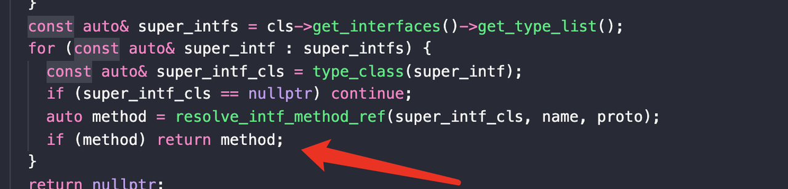

Introduction
A field or method being referenced by an instruction could be a pure ref. In which, the ref points to a class where the field/method is not actually defined. This is allowed in dex bytecode. However, it adds complexity to Redex’s optimizations.
The motivation of this pass is to resolve all method/field references to its definition in the most accurate way possible. It is supposed to be done early on, so that the rest of the optimizations don’t have to deal with the distinction between a ref and a def.
Unlike RebindRefs, the goal here is to bind the method/field reference to the most accurate one possible to produce an accurate reachability graph of the program. Therefore, the number of unique method references is not a concern.
Optimization
1. Search all methods op replace ref => def
import java.util.*;
import lombok.*;
public class Main {
public static class A {
public void print() {
System.out.print('A');
}
}
public Main() {
int i = 0;
i++;
new A().print();
}
public static class B {
public void a() {
new A().print();
}
}
public static void main() {
new A().print();
}
}
It will generate A.print ref in twice:
So this pass will search all methods and exchange their refs to a more accurate ref. Such as:
But when searching for a definition of a virtual callsite, we return one of the possible callees.

2. Refine virtual method
In the last step, we chose one of the possible callees to generate method def’s ref. But it is very rough, so we can use the real type which is saved in insn-reg to get_inferred_method_def .
3. After this pass
- This pass should be used before ReBindRefPass .
- After this, we don’t have to deal with the distinction between a
refand adef.